Deploying a registry
- 1. General settings
- 2. Creating registry administrators
- 3. Mail server settings
- 4. Key data
- 5. Data for signature verification
- 6. Virtual machines parameters
- 7. Registry resources
- 8. DNS settings
- 9. Access restrictions
- 10. Localization
- 11. Officer portal
- 12. Citizen portal
- 13. Administrative portal
- 14. Geodata management subsystem
- 15. Artifacts storage
- 16. Digital documents
- 17. Backup settings
- 18. Confirmation and deployment
| 🌐 This document is available for both Global and Ukrainian regions. Use the language toggle in the top right corner to switch between languages. |
After successfully deploying the Platform on a target environment, a Platform administrator can access the Control Plane admin console interface. In Control Plane, you can manage the configurations of the Platform infrastructure components (cluster-mgmt component) and registry components.
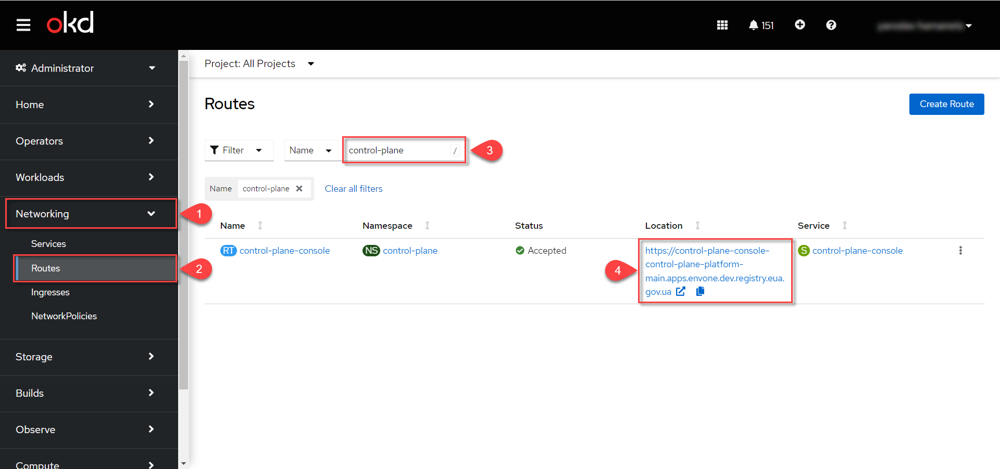
|
|
Only a Platform administrator with appropriate permissions can deploy a registry using the Control Plane admin console. This action requires a For details, see Creating Platform administrators. |
To deploy a new registry, follow these steps:
-
Sign in to Unresolved include directive in modules/admin/pages/registry-management/control-plane-create-registry.adoc - include::platform:ROOT:partial$templates/links/platform/administrative/control-plane.adoc[] .
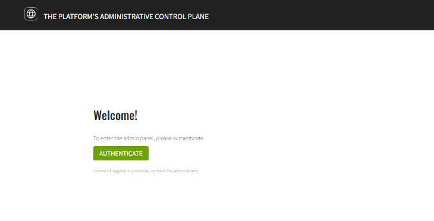 -
Open the Registries section and click the Create New button.
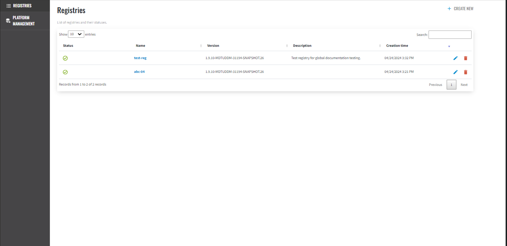 -
Configure your registry parameters.
|
Read on for details on each deployment step below. |
1. General settings
The General section comprises the primary settings for the registry to be created. Here, you can define the registry name, description, deployment mode, and a template for the registry deployment. See each option below.
Registry name and description
In this step, you can specify the registry’s system name, which is used in various data exchange operations on the Platform. The registry name cannot be changed once the registry is created.
|
You can describe the purpose of the registry or provide its official name in the Description field. This information may be helpful for business or legal reasons.
Deployment mode
In this section, you must select the deployment mode of your registry.
Deployment mode — This field is required. Choose one of two options:
-
development — installs the registry in the development mode.
-
production — installs the registry in the production mode.
|
Once the registry is created, you cannot change the deployment mode. |
Deployment mode indicates the environment in which the registry policy is deployed. It distinguishes between a production environment and a development environment, allowing customization of the configuration according to the needs of each. The registry platform supports two deployment modes: development and production.
Development mode provides deployment with settings optimized for ease of development and debugging.
Production mode provides a deployment optimized for maximum performance, stability, and security. It eliminates additional debugging tools and provides optimal configuration and settings for working in real conditions on target clusters.
|
In production mode, along with production versions of the platforms, the following are not deployed:
|
| Read more about deployment modes on the page Changing registry deployment mode. |
Template version
In this section, you can select the template version for your registry.
|
This field is mandatory. |
Template version — This field points to a specific component branch in the Gerrit repository that contains the corresponding version of the registry template. You can choose between the latest current version or the previous stable version:
-
The latest version — Contains the latest approved changes and new functionality. For example,
1.9.8.23. It is recommended to select the current version to use all current settings. -
Previous stable version — Recommended to be selected only in case of a justified need. For example,
1.9.7.57.
This process ensures that all your registry settings and configurations will be correctly migrated during the upgrade and that the new version will work according to your needs and requirements. |
Click Next to go to the next step.
2. Creating registry administrators
In this step, you can assign registry administrators.
|
You can also add administrators by editing the registry soon after its deployment. For details, see Creating registry administrators. |
-
In the Administrators field, specify the administrators who will have access to the registry.
This is a required field. It means at least ONE admin must be added here. 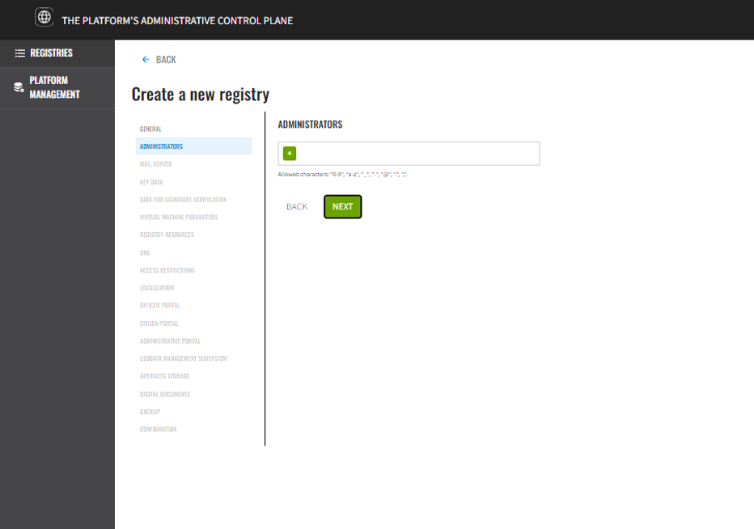
Click the
+(Add) button and provide the following details for each registry administrator:-
First name
-
Last name
-
Email address
-
Temporary password
-
At least 10 characters in length.
-
At least one lowercase letter.
-
At least one uppercase letter.
-
At least one digit.
-
At least one special character (@, #, $, %, ^, &, +, =).
-
Use Latin characters only.
-
No spaces.
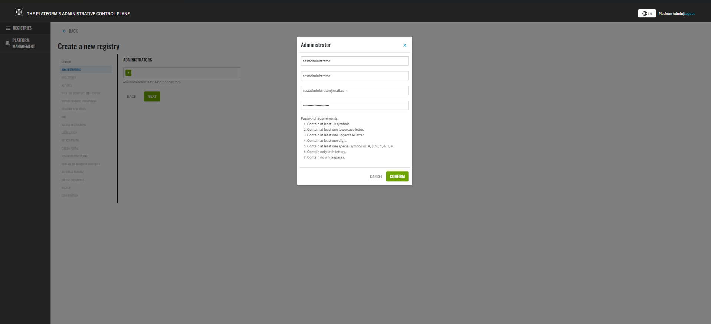
To add several administrators, repeat this step for each user separately (click
+> provide details >Confirm).Use a lower case for email addresses.
Allowed characters are: digits (
0-9), Latin letters (a-z), underscores (_), hyphens (-), at sign (@), dots (.), and commas (,). -
-
Click
Nextto go to the next step.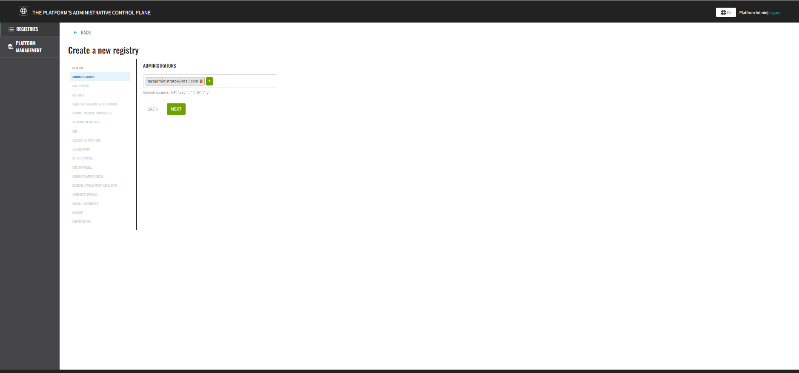
The registry administrator account is automatically created in the
openshiftrealm of the Keycloak service with thecp-registry-admin-<registry-name>role in the/cp-registry-admin-<registry-name>group, where<registry-name>is the name of your registry.
3. Mail server settings
In this step, you can select the type of mail server your registry will use for sending email messages.
| The step is optional. You can skip it when creating a registry and return to these settings when editing it. |
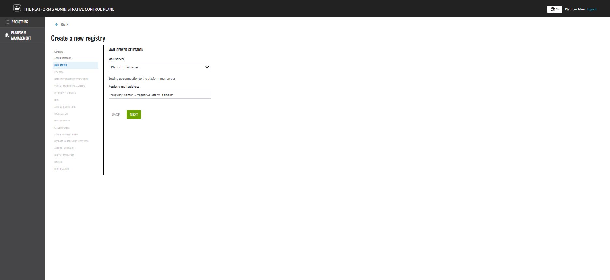
-
Platform mail server (
platform-mail-server) is a mail server distributed as part of the Platform. This service is available to all registries within a single instance of the Platform. -
External mail server (
external-mail-server) is a mail server outside the Platform (such as Gmail).
|
For details, see Configuring the mail server. |
Click Next to go to the next step.
4. Key data
The Registries Platform provides robust support for applying digital signatures to registry data, ensuring the subsequent verification of data integrity. Currently, this functionality is implemented exclusively for Ukraine, utilizing libraries certified by Ukrainian data protection authorities. Extending this capability to other regions necessitates adaptation to meet the legal requirements and standards of each specific region and domain.
Click Next to go to the next step.
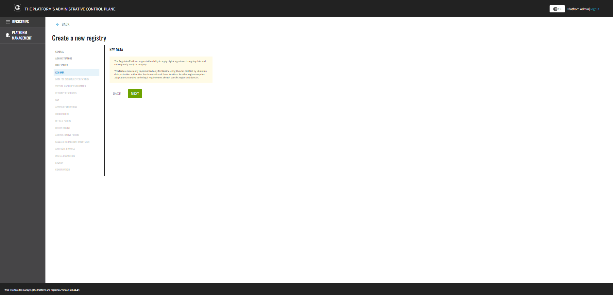
5. Data for signature verification
The Registries Platform provides robust support for applying digital signatures to registry data, ensuring the subsequent verification of data integrity. Currently, this functionality is implemented exclusively for Ukraine, utilizing libraries certified by Ukrainian data protection authorities. Extending this capability to other regions necessitates adaptation to meet the legal requirements and standards of each specific region and domain.
Click Next to go to the next step.
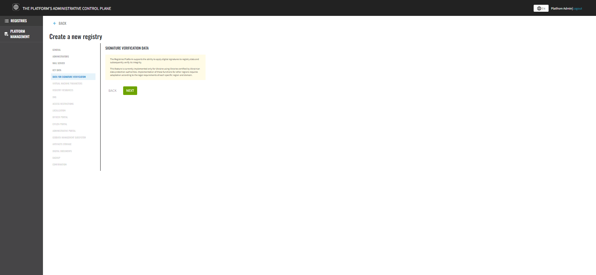
6. Virtual machines parameters
|
The OpenShift cluster is deployed on AWS infrastructure. For more information about the valid values of virtual machine parameters, see the OpenShift system requirements. |
In this step, you can configure the cluster infrastructure for your registry. Set specific parameters that have pre-populated default values.
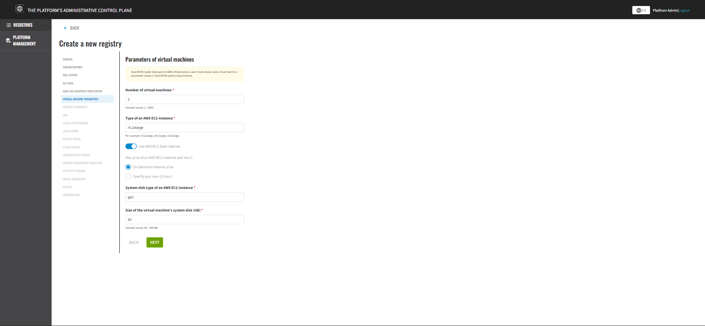
Number of virtual machines
Number of virtual machines—This field is required. Choose the number of machines between 1 and 2000. This determines the scale of your cluster.
|
By default, 2 VMs are installed. |
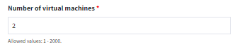
Type of AWS EC2 instance
Type of an AWS EC2 instance — This field is required.
-
r5.2xlarge: Optimized for memory, recommended for databases and caching. -
m5.xlarge: Balanced type, suitable for general purpose. -
c5.4xlarge: Optimized for computing, ideal for large computing tasks.
|
The default is |
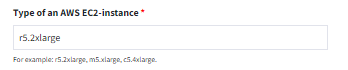
Use AWS EC2 Spot instance
Use AWS EC2 Spot instance is an optional setting that can be toggled on or off. It is disabled by default.
If enabled, additional settings become available:
Max price of an AWS EC2 Instance (per hour): This setting allows you to set the maximum price you are willing to pay per hour of EC2 Spot Instance usage. Spot Instances are unused EC2 instances that AWS offers at significantly lower prices than On-Demand Instances. Prices for Spot Instances change in real-time based on supply and demand.
You can choose:
-
On-Demand Instance price (default): This option means you are willing to pay a standard price for using an instance, which is higher compared to Spot Instances. Selecting this option ensures that the instance is available but at a higher cost.
-
Specify your own price ($/hour): This option allows you to set your maximum price per hour of usage. If the Spot Instance’s market price is less than or equal to your specified price, the instance will be launched. If the market price rises and exceeds your maximum price, the instance may be automatically disabled.
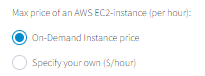
Using Spot Instances can significantly reduce computing resource costs but requires flexibility regarding resource availability, as AWS can shut down these instances with little warning if there is increased demand for these resources.
System disk type of an AWS EC2 instance
System Disk Type of an AWS EC2 Instance — This field is required.
-
The default is
gp3, which provides balanced performance and price. -
Other types, such as
io1(high performance) andst1(optimized for large volumes of data), can be selected depending on your needs.
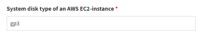
Size of the virtual machine’s system disk (GB)
Size of the virtual machine’s system disk (GB)—This field is required.
Set the allowed value between 50 and 200 GB.
|
The default is 80 GB. |
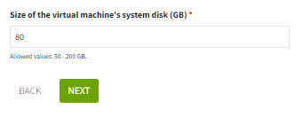
Click Next to proceed to the next step.
|
Check out these resources for more information and to deepen your understanding: |
7. Registry resources
In this step, you can configure registry resources for specific services that are deployed in it. Properly managing the resources used by containers within your registry instance ensures optimal performance and efficiency.
-
Select the service you wish to configure from the list and click
+(Add).This step is optional.
When the registry is deployed, all its services are configured using the default values for requests, limits, and environment variables.
Even if services are removed from the list, the Platform will apply the standard configuration when deploying the registry.
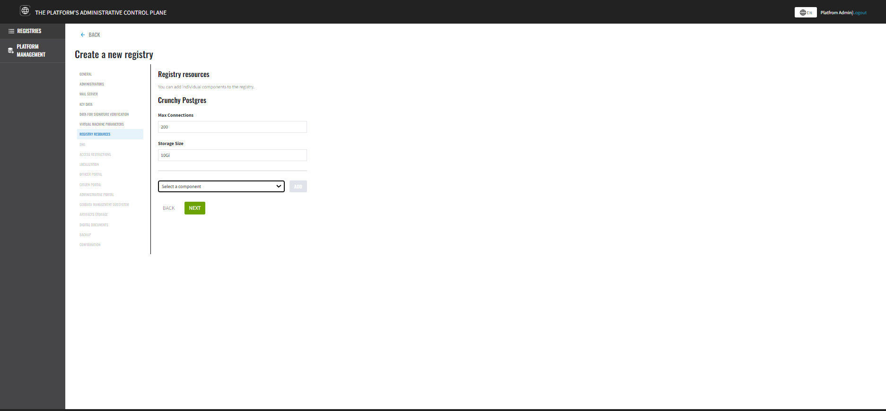
-
Customize resource parameters.
-
Click
Nextto go to the next step.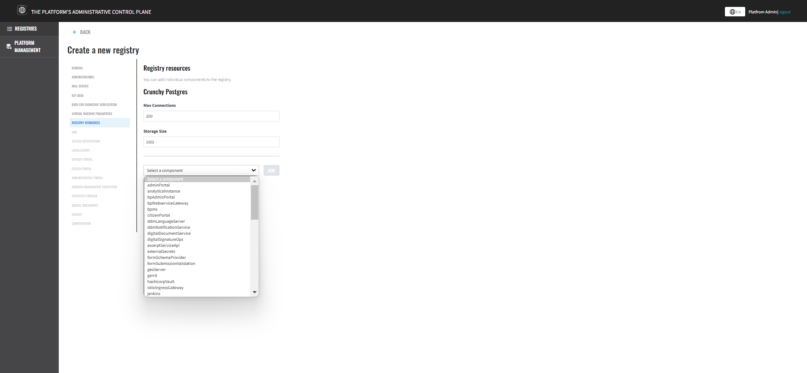
| For details on configuring the resources, see Managing registry resources. |
8. DNS settings
In this step, you can set custom DNS names and upload SSL certificates in .pem format for the Keycloak service and user portals.
|
This step is optional. If you do not configure anything here, the system will use the default values. |
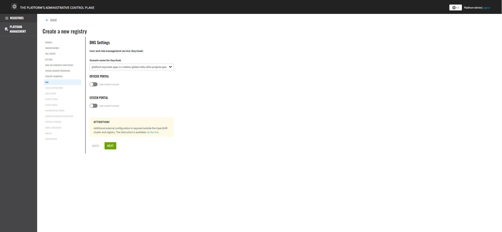
| For details on configuring DNS, see Configuring custom DNS. |
Click Next to go to the next step.
9. Access restrictions
In this step, you can restrict access to specific registry components, such as user portals and administrative components.
|
This step is optional. Nevertheless, we recommend configuring CIDR for these components for security purposes. |
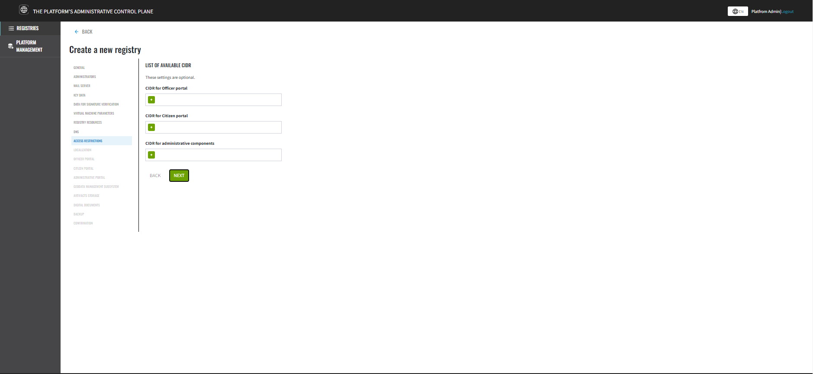
| For details, see CIDR: Restricting access to Platform and registry components. |
Click Next to go to the next step.
10. Localization
At this step, you can manage the interface languages, add regional formats, and handle translations for the following registry portals:
-
1) Unresolved include directive in modules/admin/pages/registry-management/control-plane-create-registry.adoc - include::platform:ROOT:partial$templates/links/registry/operational/officer-portal.adoc[] .
-
2) Unresolved include directive in modules/admin/pages/registry-management/control-plane-create-registry.adoc - include::platform:ROOT:partial$templates/links/registry/operational/citizen-portal.adoc[] .
-
3) Unresolved include directive in modules/admin/pages/registry-management/control-plane-create-registry.adoc - include::platform:ROOT:partial$templates/links/registry/administrative/admin-portal.adoc[] .
-
4) Reports portal:
-
Instance Unresolved include directive in modules/admin/pages/registry-management/control-plane-create-registry.adoc - include::platform:ROOT:partial$templates/links/registry/administrative/redash-admin.adoc[] .
-
Instance Unresolved include directive in modules/admin/pages/registry-management/control-plane-create-registry.adoc - include::platform:ROOT:partial$templates/links/registry/operational/redash-viewer.adoc[] .
-
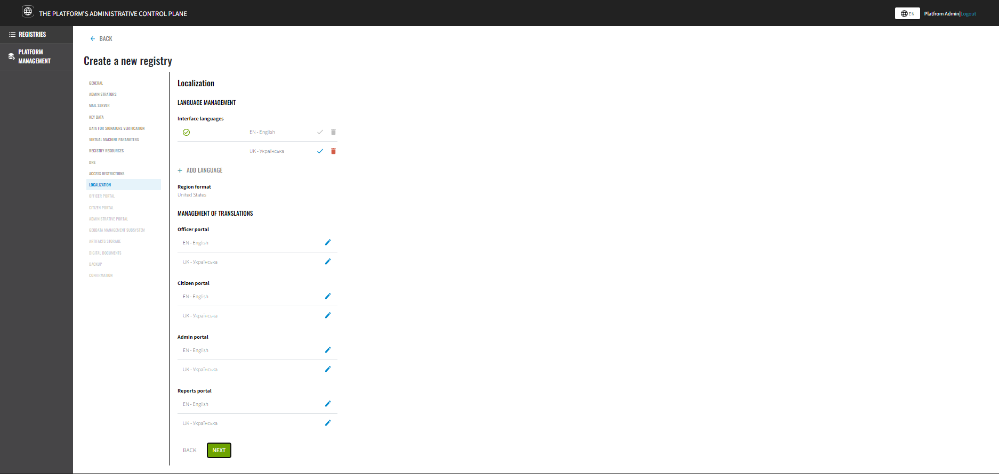
11. Officer portal
In this step, you can configure the Officer Portal deployment, enable or disable self-registration, and specify the authentication type for officers.
|
This step is optional. If you do not configure anything here, the system will use the default values: allowed deployment for the Officer Portal, disabled self-registration, and basic authentication type for registry users. |
Deploy Officer portal
Deploy Officer Portal — Use this toggle button to specify whether to install the Officer Portal instance in your registry. You can toggle it on or off depending on your needs.
The default value is ON.
|
User self-registration
Allow Self-Registration — Use this toggle button to enable the self-registration option for officers. This simplifies the user registration process by removing the need to involve an administrator.
It involves a pre-modeled self-registration business process in the registry. The default value is OFF.
|
|
If disabled, users who have started the self-registration process will not be able to complete their tasks if they are modeled. |
| For details, see Configuring self-registration for officers. |
Authentication type
Select the authentication type to use when identifying users in the system:
-
Basic Auth — Uses a simple username and password for authentication.
-
External IDP — Uses an external Identity Provider for authentication, allowing for single sign-on (SSO) and other advanced authentication features.
| You can find more on the basic user registration and authentication process on the page User registration. |
Click Next to go to the next step.
12. Citizen portal
In this step, you can configure the Citizen portal deployment and specify the authentication type for citizens.
|
This step is optional. |
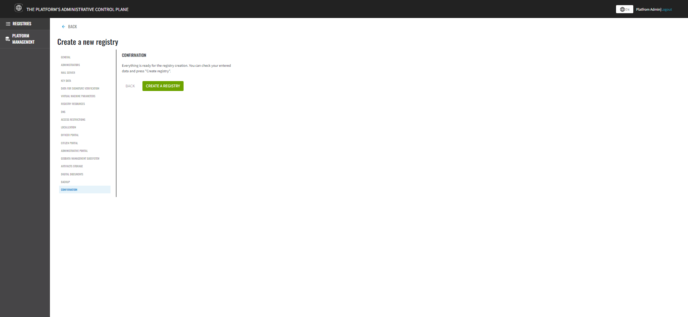
Deploy Citizen portal
Deploy Citizen portal — Use this toggle button to specify whether to install the Citizen portal instance in your registry. You can toggle it on or off depending on your needs.
The default value is ON.
|
Authentication type
Select the authentication type to use when identifying users in the system:
-
Basic Auth — Uses a simple username and password for authentication.
-
External IDP — Uses an external Identity Provider for authentication, allowing for single sign-on (SSO) and other advanced authentication features.
| You can find more on the basic user registration and authentication process on the page User registration. |
Click Next to go to the next step.
13. Administrative portal
The Administrative portal is a key component in the process of creating and managing the registry. In this step, you can enable or disable the deployment of the web portal for modeling and development of the registry policy.
| Enabled by default. It is recommended to leave the default value enabled when deploying the registry in development mode, and vice versa — disable the deployment of the Administrative portal in production operations. |

14. Geodata management subsystem
At this step, you can apply the Geodata management subsystem, which is an integral part of any modern information system that requires spatial data processing and analysis. This subsystem provides facilities for storing, processing, visualizing and distributing geospatial information.
The corresponding switch allows you to activate the Geodata management subsystem in your registry. This includes integration with various geoinformation services, the ability to use geospatial databases and tools for creating and administering geodata.
| Disabled by default. |
| It is important to note that once the registry is created, it will not be possible to change these settings. Therefore, carefully consider the need to include the Geodata management subsystem at this stage. It is especially important for registries using geospatial information for analytics, planning, or visualization. |
| You can learn more about geoserver capabilities on the Working with geodata in the registry page. |
Click Next to proceed to the next step.
15. Artifacts storage
At this step, you can choose a storage option for generated artifacts.
To save registry resources, select the Platform option. This allows you to store registry artifacts efficiently, conserving resources and ensuring optimal performance.
If conserving resources is not a priority, and you prefer to store registry artifacts in a separate storage, select the Registry option.
Click Next to proceed to the next step.
16. Digital documents
The Control Plane provides an intuitive interface for managing upload restrictions on digital documents by users and business processes. You can set the maximum size for individual files as well as the total maximum size for groups of files that can be uploaded by users through the interface.
Values are entered in megabyte (MB) and can consist of digits (0-9) and a decimal point. The maximum length of the value is 4 characters, such as 10, 100, 50.2. It must be less than or equal to the global platform-level limit of 100 MB for the maximum request size. By default, the maximum possible values are set — 100 MB for both fields.
|
| For more details about this functionality, see Managing restrictions on digital document uploads. |
Click Next to proceed to the next step.
17. Backup settings
In this step, you can set the backup schedule for your registry components and define the retention period for backup copies in the backup repository.
Component backup copies are created using the Velero tool and stored in the MinIO secure backup storage outside the Platform cluster. The backup schedule is configured using the unix-cron format in the Control Plane admin console interface.
The system also performs automatic replication of data stored in S3 buckets. You can configure a backup schedule for these replications.
|
Backup configuration is disabled by default. |
When enabled, you can schedule backups by specifying the retention time, backup retention schedule for S3 object replications, and the backup storage location for S3 object replications. You can also enter custom values.
|
Click Next to go to the next step.
18. Confirmation and deployment
To complete the procedure, click the Create registry button.
You can return to any of the settings tabs to double-check the data you provided.
As a result, the registry appears in the Registries section of the Control Plane admin console interface.
If the registry is deployed successfully, a green check mark appears next to its name in the Status column.
Deploying the registry takes some time. The Jenkins service starts the deployment automatically by running the pipeline called Master-Build-<registry-name>, where <registry-name> is the name of your registry. To monitor the deployment process, go to the Registries section, open the registry you just created, scroll down to the Configuration section, and click the Jenkins link icon in the CI column.
After successfully deploying the registry, you can view the current registry settings and make changes to its configurations.
| For more details, see the Viewing and editing registry configuration page. |